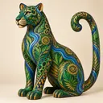
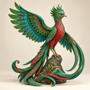
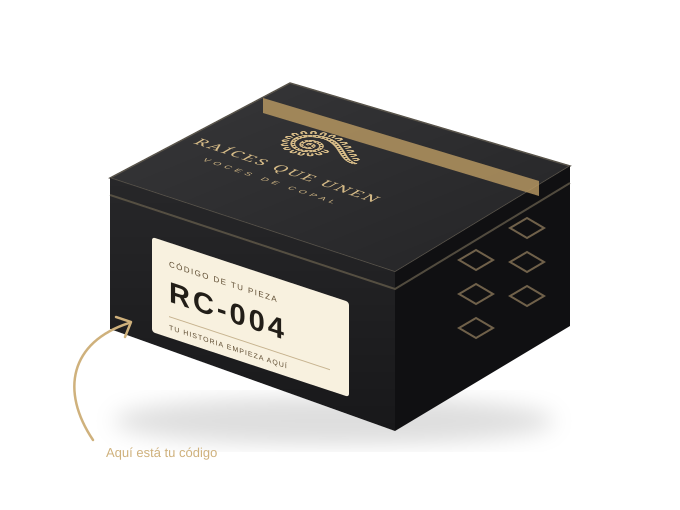
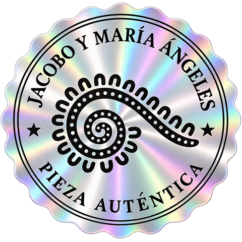

RAÍCES QUE UNEN / CONCEPTO DE COLECCIÓN
PASAPORTE TRIPLE
La historia completa de tu pieza.
Edición conceptual. Datos de autoría, procedencia, impacto y certificación pendientes de validación documental.